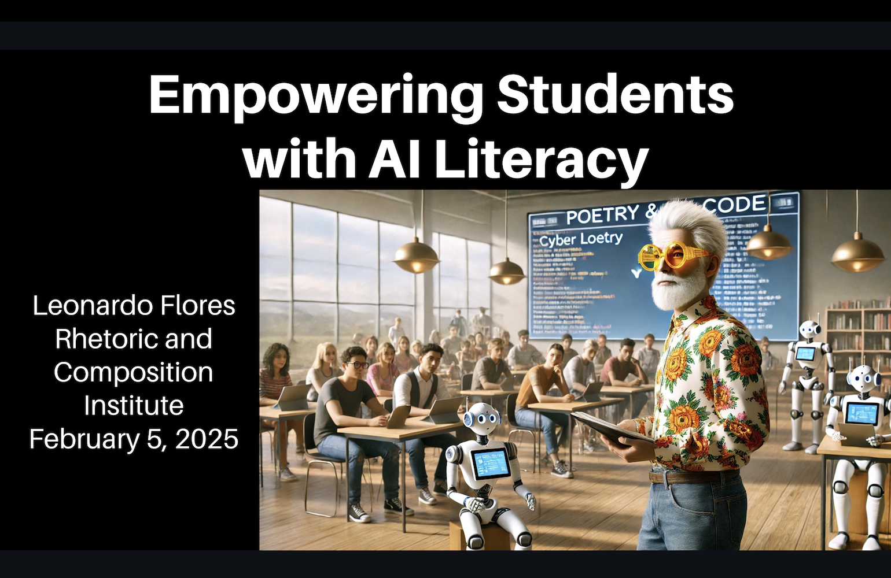
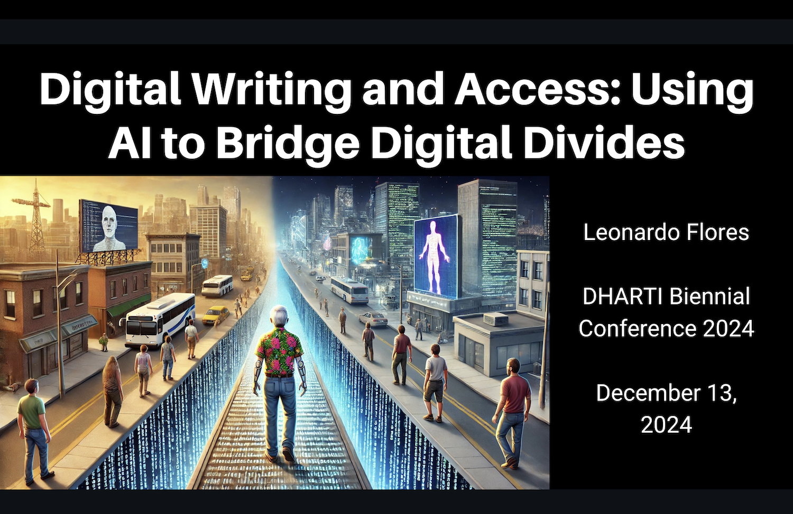
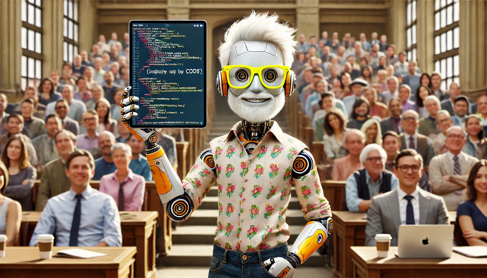
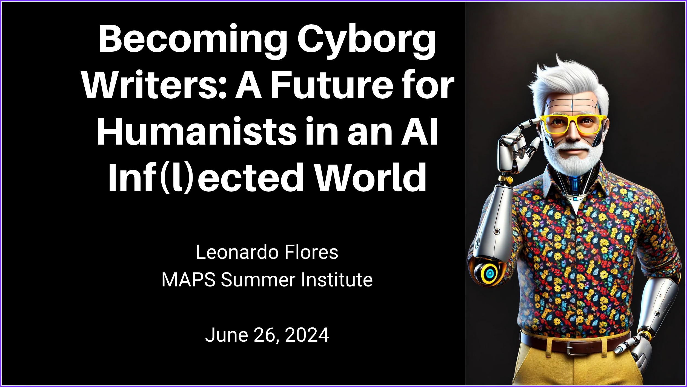
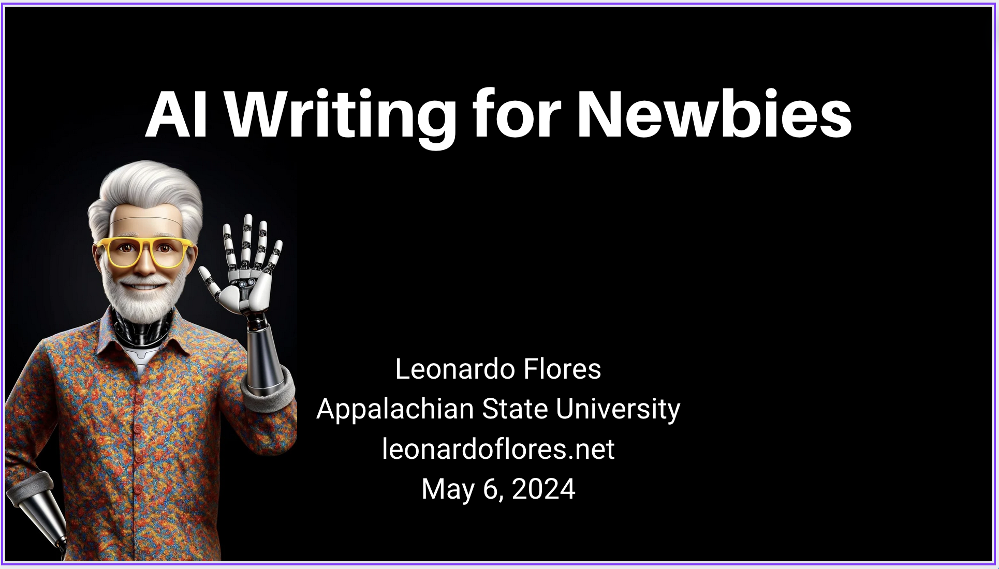
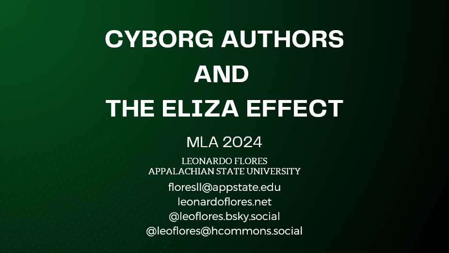

Panel: Empowering Students with AI Literacy
On Wednesday, Feb 5, I will participate in a round table panel at App State's Rhetoric and Composition Institute (RCI), along with colleagues Beth Cox, Ben Good, and Bill Torgerson.

On Wednesday, Feb 5, I will participate in a round table panel at App State's Rhetoric and Composition Institute (RCI), along with colleagues Beth Cox, Ben Good, and Bill Torgerson.

This presentation titled "A Cyborg Creative Coding Practice" is in the context of an MLA 2025 round table titled "Bespoke Platforms and Algorithmic Resistance: Electronic Literary Futures." Here's a...

On December 13, 2024 I will be giving a plenary talk at the DHARTI 2024 conference at IIT Jodhpur, India.

On Thursday, September 19, I gave the keynote address at the Florida Digital Humanities Consortium 10-Year Anniversary Conference. My keynote will be titled "The Digital Humanities in an AI...

In this workshop, offered at ELO 2024, participants will learn how to prompt Chat GPT (or AI code generator of choice) to generate valid HTML, CSS, and JavaScript code and use a code editor (I will...

Earlier today, I participated in the MLA 2024 MAPS Leadership Institute (link to program) in a plenary panel titled "Before the Robots Take Over: Envisioning a Future with and for the Humanities."
A word (or phrase or poetic line) appears in the middle of the screen. When the user touches it, it changes to a different word. This allows you to write a sequence of words that can complete a...
Aquí está el enlace a la ponencia ofrecida hoy en el II Congresso Internacional LitDigBR.

This morning I had the pleasure of giving a talk on AI to a group of high school students at Iona Preparatory School, in NYC, courtesy of an invitation from Mr. Heri Albertorio, a former student and...

On Friday, April 5, 2024, I gave the keynote presentation at the Appalachian State University Libraries' AI Symposium. The talk was titled "Using AI Responsibly in Research and Creativity."

I'm sharing the slideshow and an audio recording of my talk "Cyborg Authors and the Eliza Effect" which is part of an MLA 2024 panel titled "Generative Text and the Future of Electronic Literature."